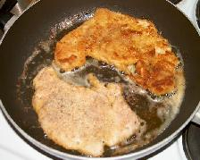
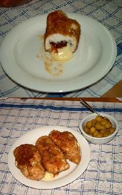

Keittokirja
Olet sivuillani kävijä.
Sisällysluettelo
- Broileriruokia
- Juomia
- Jälkiruokia
- Kakkureseptejä
- Kalaruokia
- Kastikkeita
- Keittoja
- Leipäreseptejä
- Liharuokia
- Pastaruokia
- Pullareseptejä
- Pikkuherkkuja
- Atsovärit
- seti@kauppinen.com
Sivut päivitetty 9.9.2019
Broileriruokia
Keittokirjan etusivulle.
Kauramakaronipata (Pastaruoka)Ministerinleike broilerin rintafileestä.
Rapeat broilerit.
Broileria savipadassa.
Broilerin rintaa italialaisittain.
Viinikukko.
Uunibroileri.
Broilerpataa italialaisittain. 
{kind=link}
Ministerinleike broilerin rintafileestä
- 4 maustamatonta broilerin rintafilettä
- 1-2 munaa
- korppujauhoja
- suolaa
- pippuria
- sitruunan puolikas
- 1-2 valkosipulin kynttä tai valkosipulijauhetta
- öljyä paistamiseen
Nuiji rintafileet varovasti ohuiksi leikkeiksi voipaperin tai kelmun
välissä. Mausta murskatulla valkosipulilla tai jauheella sekä suolalla
ja pippurilla. Vaihtelua halutessasi voit käyttää myös muita mausteita
ja suolan tilalla soijakastiketta. Alkuperäinen resepti muistuttaa maultaan
hämmästyttävän paljon Wienin-leikettä paitsi että sian maku puuttuu.
Anna fileiden maustua hetki, kasta ne sitten munaseokseen ja kierittele korppujauhoissa.
Paista leikkeitä kuumalla pannulla molemmin puolin kunnes ne ovat kypsiä,
rapeita ja kullanruskeita. Purista leikkeiden päälle vielä puolikkaan sitruunan mehu.
Tarjoile perunamuusin kera.
[Broilerihakemiston alkuun]
Rapeat broilerit
- 4 marinoitua broilerin koipireisi tai rintapalaa
- 1 dl emmentaljuustoa raastettuna
- 2 dl Corn Flakesia murskattuna
Hienonna Corn Flakesit muovipussissa ja raasta juusto. Sekoita lautasella keskenään Corn Flakesit ja juustoraaste. Kierittele broileripalat seoksessa ja nosta laakeaan uunivuokaan. Kypsennä 200°C n. 50 minuuttia. Tarjoile perunavuoan ja salaatin kanssa.
[Broilerihakemiston alkuun]
Broileria savipadassa
Liota savipataa kylmässä vedessä 15-30 minuuttia. Mausta kokonainen broileri, neljännespalat, koipireidet tai rintaleikkeet esim. broilerimausteseoksella tai yrttisuolalla. Voit käyttä myöös valmiiksi marinoituja paloja. Laita kansi päälle ja pata kylmään uuniin ja kuumenna uuni 150-175°C. Kokonainen broileri on valmista 1½ tunnin kuluttua, palat jo hieman aikaisemmin.
[Broilerihakemiston alkuun]

{kind=link}
Broilerin rintaa Italialaisittain
- 4 kpl broilerin maustamatonta rintafilettä
- 150 g mozzarellaa
- 100 g aurinkokuivattua tomaattia
- 16 kpl tuoreita basilikan lehtiä
- 2 rkl vehnäjauhoja
- 2 munaa
- 40 g maissihiutaleita
- suolaa, pippuria
Leikkaa fileisiin syvä tasku. Varo kuitenkin rikkomasta sitä. Leikkaa mozzarella pitkiksi tangoiksi, laita sen päälle tomaattiviipaleet ja kääri ympärille basilikan lehdet. Laita tanko fileen sisälle ja sulje coctailtikuilla. Mausta suolalla ja pippurilla. Kiepauta vehnäjauhoissa, sitten kananmunassa ja murskatuissa maissilastuissa. Sulata voita pannussa ja paista fileitä n. 6 minuuttia puolta vaihdellen. Maissilastujen sijaan käy myäs korppujauho tai murskattu cashewpähkinä, mikä sopii hienoihin tilaisuuksiin.
[Broilerihakemiston alkuun]
Viinikukko
- 1 broileri tai 4 koipireisi- tai rintapalaa
- 1 paketti (170 g) Amerikanpekonia
- 2 sipulia
- 200 g tuoreita herkkusieniä
- 1 rkl vehnäjauhoja
- 3 dl punaviiniä
- 1 tl sitruunapippuria
- 1 tl timjamia
- suolaa, persiljaa
Paloittele broileri, koipireisipalat kahteen osaan. Suikaloi pekoni ja ruskita pannulla. Lisää joukkoon viipaloidut sipulit ja halkaistut herkkusienet. Kaada seos pataan. Ruskista pannulla kevyesti broileripalat ja nosta pataan. Sekoita joukkoon vehnäjauhot ja lisää punaviini (alkoholitonkin käy). Mausta pata pippurilla ja timjamilla. Anna hautua kannen alla runsaat puoli tuntia. Tarkista maku ja lisää suolaa tarvittaessa. Tarjoa riisn kera.
[Broilerihakemiston alkuun]
Uunibroileri
- 4 maustamatonsta broilerin rintafiletä
- 1 tl suolaa
- 1 tl kurkumaa tai currya
- 2 rkl makeaa chilikastiketta
- 2 rkl sitruunamehua
- 2 rkl juoksevaa hunajaa
- 1 tlk kookosmaitoa
Paloittele broilerinfileet kolmee osaan. Laita palaset uunivuokaan ja mausta suolalla ja kurkumalla tai currylla molemmin puolin. Sekoita kulhossa loput aineet ja kaada fileiden päälle. Kypsennä uunissa 200°C noin 45 minuuttia. Tarjoa jasmiini- tai basmatiriisin ja kypsytettyjen sokeriherneiden kanssa.
[Broilerihakemiston alkuun]
Broielripataa Italialaisittain
- 500g broilerin rintafilettä (3-4 kpl)
- 1 iso tai 2 pientä paprikaa
- 6-8 salottisipulia
- 3 valkosipulin kynttä
- 250g kirsikkatomaattia
- ½ litraa kanalientä
- ½ ruokalusikallista valkoviinietikkaa
- sitruunapippuria
- timjamia
- 3 laakerinlehteä
Paloittele fileet noin viiteen reiluun palaan ja ruskista ne nopeasti kuumalla pannulla. Laita broilerpalat padan alimmaiseksi. Laita lihanpalojen pälle reilunkokoiset paprikapalat, kokonaiset/halkaistut salottispulit sekä murskatut valkosipulin kynnet. Lisä mausteet. Kaada pälle kanalientä kunnes ainekset peittyvät. Kypsennä liedellä miedolla lämmöllä n. 30 minuuttia. Lisä kirsikkatomaatit ja kypsennä vielä 10 minuuttia. Tarjoa riisin kera.
[Broilerihakemiston alkuun]